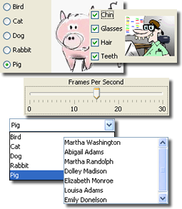
Text is only one type of input that programs need to process. Many programs work with numeric input, or respond to differnt kinds of user actions. The wealth of different "widgets" available in Swing's JFC build to handle these different kinds of input is truely staggering.Some of the Swing widgets—the text-editor kits, for instance—are massively complex; you could spend an almost infinte amount of time exploring all of the ins and outs. Since this is likely more time than you have—and certainly more time than I have—we're just going to take a quick look at several new classes that you might find handy.
We'll start this secion by learning about a few Swing components allow you to make selections among different alternative. These include:
- the checkbox for processing true/false input
- the radio button and drop-down list for processing multiple-choice input
We'll be looking at the Swing versions of these components which replaced the older and less capable AWT versions. We'll also take a look at two components that don't replace existing AWT widgets:
- JSlider, for simulating analog input
JProgressBar, for giving users up-to-the-second feedback
Let's start our exploration by examining the JCheckbox
class, which is used for both check boxes (as you'd expect) and
for radio buttons (which you might find surprising).
One of the best places to learn about all of the other components is the free
Java Tutorial at
http://download.oracle.com/javase/tutorial/.
Look for the Visual Guide to Swing Components which contains an index, along
with short examples for each component. The example programs can all be run from
within your Web browser, using the Java Web-Start feature. The pictures above are all
taken from the Visual Guide.
Checkboxes, Radio Buttons and Drop-down Lists
JCheckBox objects are
user-interface (UI) components that
represent boolean or true/false values. Each
JCheckBox can be either checked or unchecked,
with each variation representing a true/false or on/off state.
Since each individual JCheckBox object can be on or off,
a group of checkboxes is often used to represent a set of
non-exclusive options. If your program has three checkboxes,
then any, all, or none of them may be selected.
The actual shape of a checkbox depends on the platform you're using. Typically it's a square box with an "x" inside if the option is selected, and a hollow box if the option is unselected.
Some platforms, such as Windows, support a middle, "maybe" state for checkboxes, but Java doesn't support this option.
Creating JCheckBoxes
To create a JCheckBox object, you can use one of six
different constructors. The two simplest are these:
JCheckBox(String label)
JCheckBox(String label, boolean checked)
The first constructor creates an unchecked
checkbox, one whose state is
false.
The second constructor creates a checkbox object and uses the second argument to determine the object's checked state, like this:
private JCheckBox one = new JCheckBox("One (unchecked)");
private JCheckBox two = new JCheckBox("Two (checked)", true);
You can also pass false for the second argument, but
the effect is the same as using the first constructor, so
why go through the extra typing?
Here's what these two checkboxes look like in an ACM graphics program
using the default (Java) look-and-feel:
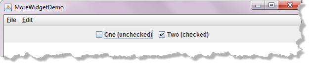
Here are the same two checkboxes using the Windows look-and-feel, running in Windows 7: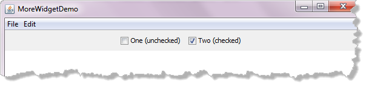
Checkbox Methods
While you can write code to respond immediately when someone clicks on a checkbox in your program, most of the time, you really don't care if someone checks or unchecks your checkbox. Instead, you just want to find out if it is currently checked when it comes time to use it.
The JCheckBox class has two state-related methods
that allow this. If you want to find out if a JCheckBox
is currently checked, then use the isSelected()
method like this:
boolean isOn = one.isSelected();
If isSelected() returns true, then the
JCheckBox is checked; if it returns false,
then the checkbox is unchecked.
You can also set the selected state programmatically using the
setSelected() method like this:
one.setSelected(true); // Check it
You might do this if the checkbox needed to be
checked based upon some other condition in your program. You
wouldn't normally encounter this, however, when working
with JCheckBox objects.
Radio Buttons
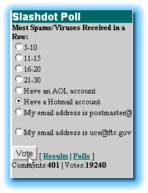
Radio buttons are close kin to checkboxes; both of them have the same immediate ancestors,AbstractButton and JToggleButton from
which they inherit much of their behavior.
The main difference (logically) is that a checkbox
represents a non-exclusive choice: if you have ten checkboxes,
all of them may be checked, none of them may be checked,
or anything in between.
Radio buttons represent the exclusive side of the family. If you have four radio buttons in a group, one, and only one, can be checked at any given time. (It is possible for none of the radio buttons to be checked, but this would be a design flaw in your program.)
The actual widgets displayed when you create a set of radio buttons depends on the platform on which you run your program. If run under Motif (on Unix), you'll see the little diamonds favored there. More commonly, on Windows and the Mac, you'll see a group of small circles, with one of the circles filled.
JRadioButton and ButtonGroup
The Swing JRadioButton works along with
the ButtonGroup class to create radio buttons.
The ButtonGroup object acts as a logical
(not physical) container, tying a group of
RadioButton objects together. The ButtonGroup
lets Java know that it is supposed to enforce the "only one selected"
rule when the radio buttons are selected.
Here's how you start:
private ButtonGroup group = new ButtonGroup();
While there are eight different JRadioButton constructors,
allowing you to specify either icons, text, or both along with the
button itself, for simple buttons you'll use one of these two
RadioButton constructors.
RadioButton red = new RadioButton("Red");
RadioButton green = new RadioButton("Green", true);
Make sure that only one only one of your radio buttons in a single group uses the second version of the constructor. Passing true means that button will be initially checked. Sometimes, though you don't want any buttons to be checked (as with a quiz).
While your ButtonGroup should be an instance variable,
you can create your radio buttons as local variables. When
you want to find out which button is selected, you'll query the
ButtonGroup object.
Making Connections
Before you can use your buttons, you'll normally need to perform at least these three steps:
- Provide an action command for each button—a short string used to identify the button when it is clicked.
- Add each button to the logical
ButtonGroupthat you created. - Physically add each button to the container that will house it.
Here's some code that performs these three steps for the two
JRadioButton objects from the last section:
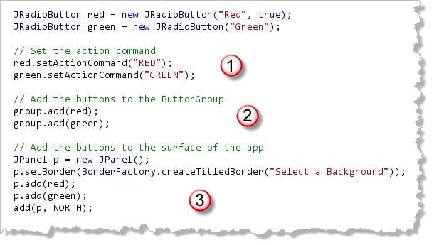
In an ACM graphics program, you handle this like any other widget, adding it to one of the borders. You may also use theJPanel class along with a border to
provide some visual separation for your radio button, as I've
done here.
In addition, you may want to add a keyboard mnemonic to each button, so it can be selected directly, as well as activating event-listening for the button, if you want to take immediate action when a radio button is clicked. Normally, though, you don't want to do that.
Which Radio Button is Selected?
Normally, the user should be able to select and deselect radio buttons and checkboxes, and then, click some other button to apply the changes, go to the next question, or submit the form. You normally don't want every click firing an event.
To find out which radio button is selected, you can visit each
button in the ButtonGroup, calling it's getElements()
method to return an Enumeration of AbstractButton
objects, or take the easier route and call the
group's getSelection() method, which returns a ButtonModel
object.
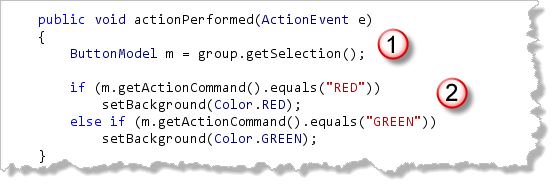
Then, call theButtonModel method, getActionCommand()
and make your selection based on that. It actually sounds more difficult than
it is. This a fragment of code, located in a JButton event
handler, that queries the group created earlier and sets the background
color based on which radio button was selected.
Here's the program running showing the radio buttons in their titled
JPanel using the Windows look-and-feel:
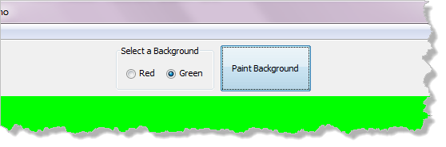
Here's the same program using the default Java Swing widgets instead: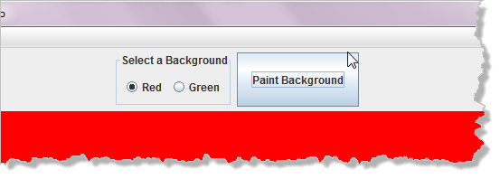
Drop-down Lists
If you have a whole lot of choices
to make, using JRadioButton isn't always practical.
Selecting the user's state, for instance, would take at least fifty of
them.
When you have a large number of selections, the JComboBox
offers a better alternative. Although it can be used in more complex
configurations, the simplest version displays itself ast a
represents a drop-down (or pop-up) list containing Strings,
from which the user can choose exactly one.
You have two basic ways to construct a simple JComboBox:
- Use the default constructor and then use the
add()method to populate the list one by one. - Use the array contructor that supplies the the values (or model) when the combo box is created.
If you are going to strore the values in a text file and read them from disk, it might be practical to use the first method. Most of the time, though, it's easier to use the second.
Here's a fragment from an application,
AutoWit.java, that
uses this technique to intialize several different drop-down lists:
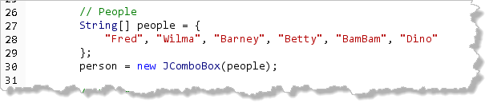
Working with JComboBox
When you first populate a JComboBox, the first item
added will normally be the selected item. The selected
item is the item that is displayed in the JComboBox
when the drop-down portion of the list is "closed."
You can change the selected item by explicitly selecting
an item using the setSelectedIndex() method.
When you use the setSelectedIndex() method youspecify
the item's index (starting from zero) like this example,
where I've selected the third item from the verbs
list:
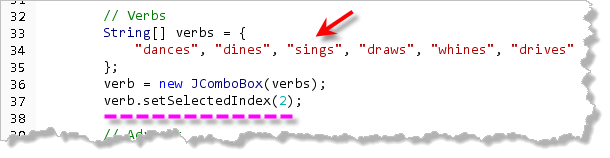
There is also asetSelectedItem()
method that accepts a String like this: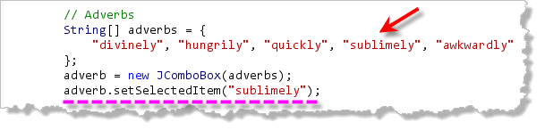
That way, if you add additional items to the list, you don't need to remember to adjust the index value. If several items have the sameString value, only
the first is selected. If you try to select a String
that is not in the JComboBox, then the selected
item doesn't change.
Here's what the three combo-boxes look like with the Windows
look-and-feel. Notice that the items I've selected are shown
in the drop-down:
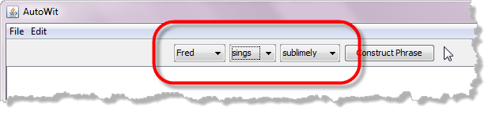
And here are the lists with the Java look-and-feel: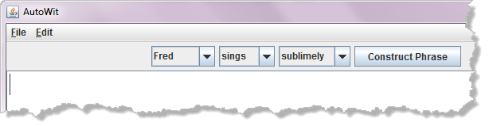
Retrieving Values
The JComboBox class has two methods that allow you
to retrieve the selected item from the list.
- The
getSelectedIndex()method returns the index of the selected item; this is a number like 0, 1, or 2. - The
getSelectedItem()method returns the actual text description that appears in the combo box itself.
Here's the event-handler from AutoWit that displays the
message selected in the list boxes when the user presses
the Contruct Phrase button:
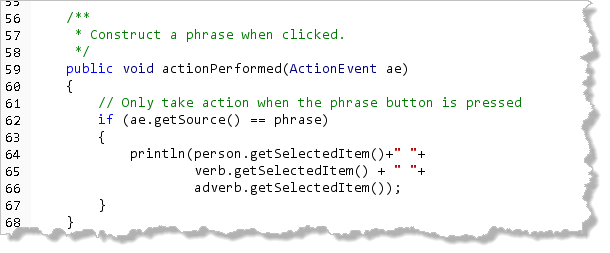
The JComboBox class "fires" ActionEvents just
like the JButton class does. In an ACM program, where you
use addActionListeners to activate your JButtons,
all of the JComboBoxes will be activated as well. That's
why the code above checks to see if the phrase JButton
is firing the event before constructing and printing the final phrase
on the screen.
Here's what the program looks like when it runs:
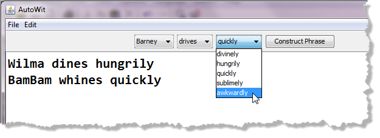
New Swing Components
There are several Swing components that don't have any matching AWT components. Two simple ones you may want to use include:
- JSlider, for simulating analog input
JProgressBar, for giving users up-to-the-second feedback
These are fairly easy to use in ACM graphical applications. I'll show you some simple examples. Once you see how to get the basic functionality from the component, you'll be better prepared to explore the nooks and crannys on your own.
Ready? Let's start with the JSlider.
JSlider
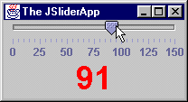
The JSlider control, shown here, is useful when you want to simulate analog input. Of course, since you're computer is a digital device, you can't really make use of analog input without sampling (as is done for digital images and sounds). To construct a JSlider object, you specify the
orientation (HORIZONTAL or VERTICAL), along
with minimum, maximum, and initial values.
There are several constructors that allow you to
specify fewer arguments, providing default values for those you skip.
Constructing JSlider Objects
Here's a line that constructs a JSlider named
speed, supplying only the minimum and
maximum values. The orientation will be set to horizontal
and the initial value will be set to the middle of the
slider's range:
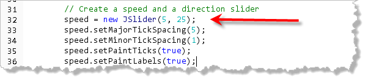
Here's a secondJSlider named direction that
uses three arguments to set the initial value to a random
direction: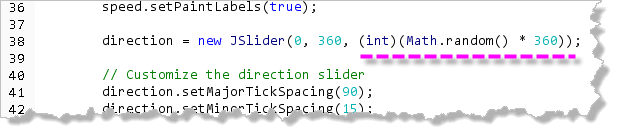
Customizing JSliders
A JSlider will automatically paint both
major and minor "tick-marks" and numeric labels at each major tick
mark (as you can see in the image above). By default, though,
the major and minor tick spacing is zero, and painting is off.
To turn it on, use the setMajorTickSpacing(),
setMinorTickSpacing(), setPaintTicks(),
and setPaintLabels() methods together as shown in
this example:
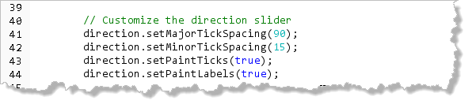
Here's what this slider looks like when displayed using the Java look-and-feel: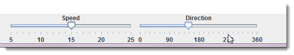
Placing JSliders
Placing a JSlider in an ACM program is a little
more work than some of the other components. The default layout
manager used for the borders tends to resize them a little strangely,
and, normally, you'll want to supply a label that says what the
slider controls.
Here are the steps that I've used for the sample program I've created here:
- First, since I wanted to add a label to each
JSlider, I needed to display two rows of components. You can do that by installing a newacm.TableLayoutlayout manager into the region you want to change. My code, shown here, installs a 2 x 2 layout manger into the south panel:
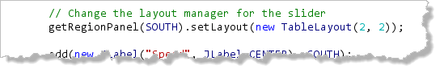
Note that to do this, I had to addacm.gui.*to my list of imports. - Next, to fix the sizing problem, I had to set a minimum size
for each of my sliders. Here's the code that does that:
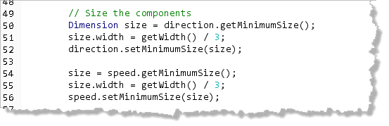
- Finally, add the sliders and labels to the south panel, starting
in the upper-left corner. That's why the two labels are added first
and the two
JSlidersadded last. Here's the code:
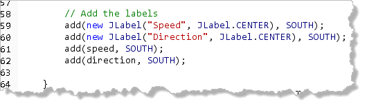
JSlider Methods
You can set and retrieve the current value of
the JSlider through the mutator and accessor methods
setValue() and getValue().
Here's some animation code that grabs the speed and direction
from the respective turtles to control the GTurtle
named tim:
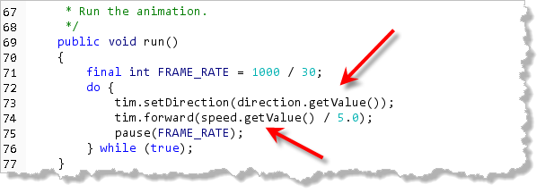
You can try it out on your machine by downloading JSliderDemo.java and running it on your own machine: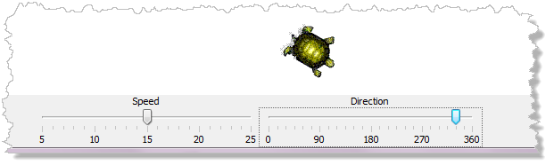
JProgressBar
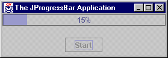
TheJProgressBar class, shown here with
the Java Metal look-and-feel, allows you to keep your users
informed about the progress of any lengthy operation.
Here is what you need to know to use a JProgressBar.
You can download
JProgressBarDemo by clicking here.
Creating a Progress Bar
To construct a JProgressBar, you supply
the orientation (which defaults to HORIZONTAL),
the minium and the maximum. Note that unlike a JSlider
you don't specify an initial value, since it is assumed
to be zero.
Because the JProgressBar is usually
reinitialized at the beginning of any task, the default—no
argument—constructor is often used instead of
the normal working constructor.
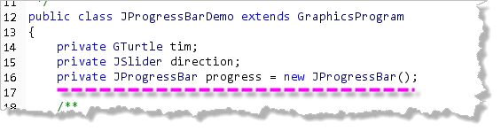
You can change the appearance of theJProgressBar by using the methods
setBorderPainted(), setStringPainted(),
and setString(), like this:The
progress object is told to paint
both its border, with setBorderPainted(), and its
interior, with setStringPainted().
The progress bar is added to the borders just like any other widget used in an ACM program.
Using a Progress Bar
Inside the run() method of the demo program,
after waiting for the user to start the animation with a
click, the program starts running and displaying its
progress in the JProgressBar:
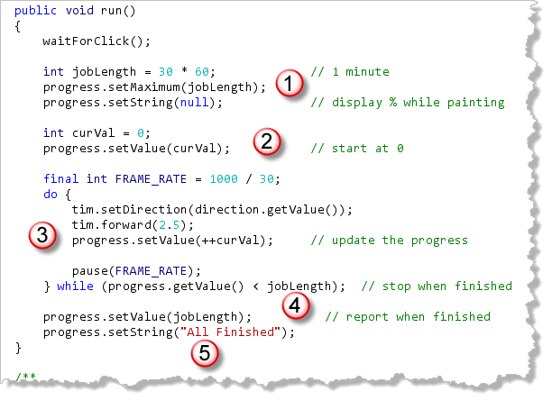
- A simple variable is used to simulate the length of the
job. Since our animation happens at 30 frames per second,
I've arbitrarily selected a one-minute job length.
In real life, of course, you'd use the length of a file or
some other "real" job metric. Then the progress bar's
"maximum" value is set to the job length
(using
setMaximum()) andsetString(null)is called to tell the progress bar to paint the percent indicator as its value changes. - You can set and retrieve the current value of
the
JProgressBarby usingsetValue()andgetValue(). Normally, however, you'll just usesetValue()to initialize the bar to a0value before the job starts (here represented by the variablecurVal). - As the job progresses, increment the value and then
call
setValue()again. - The job is finished when
getValue()reachesjobLength. - After the loop, set the value to the maximum once again and change the string displayed to indicate the job is finished.
In real life, you probably wouldn't use a loop like this, but would update the bar after each packet was received, or each block was transferred, or each line-item was tallied, all depending on the application.
Here's what the results look like with the default (Java)
Look and Feel:
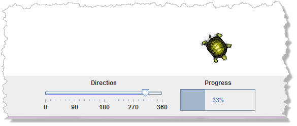
And here's the results with the Windows L&F using Windows 7: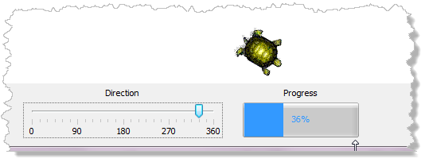